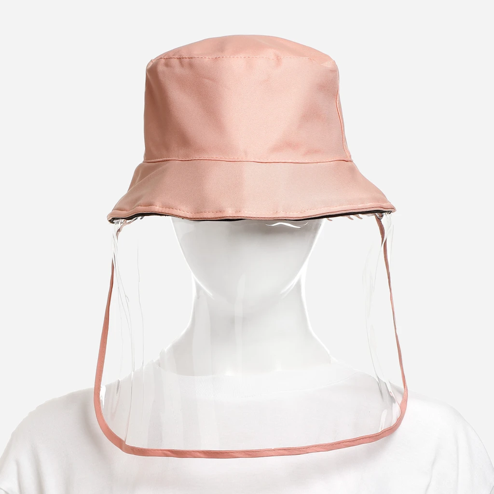
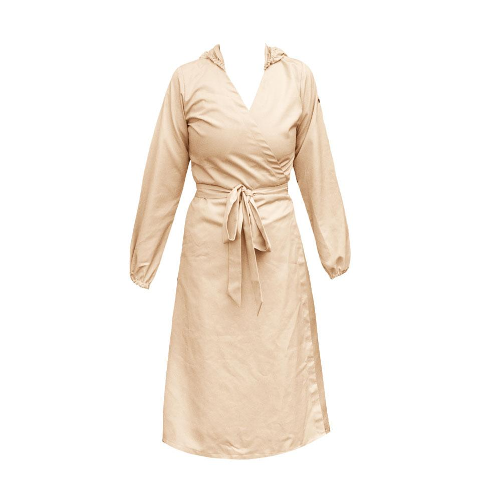
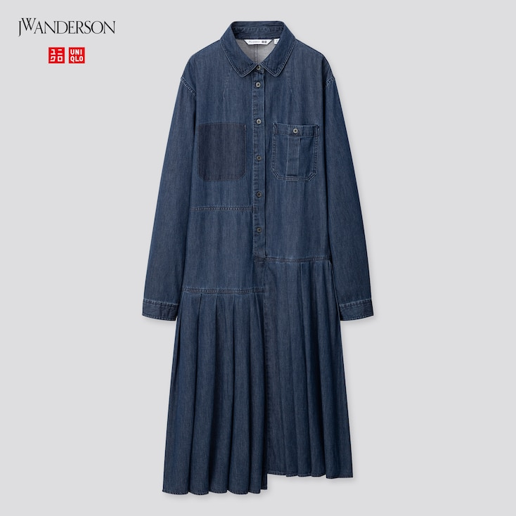

Fashion
As we gear for a renewed way of living, so does our closet. The coronavirus outbreak has undoubtedly changed daily life in a multitude of ways. After a year that we’ve stayed indoors to help flatten the curve, even the way we interact with our closets have transformed. With no physical engagements to attend and most work taking place from home, the days of piling on fashion-forward clothing and accessories have largely been replaced by throwing on essential pieces that put utility and comfort above all.
We’ve put together a list of things we’re stocking up on as our new normal closet must-haves. If you don’t know where to begin, the list below should be a good start.
The Face Mask
Your new favorite accessory! Unlike most fashion trends, wearing a face mask was born out of necessity and care for those around us. Crafted from linen and cotton fabric, Seek the Uniq’s Intricado Embroidered Face Mask is at the top of our list for its tropical-inspired aesthetic and stunning embroidery. Featuring designs such as palm trees, flowers, and lemons, it’s hard not to look good in these stunners.
The Face Shield
For those who are serious about protective gear, a face shield is definitely a great accessory to have around. To make it less intimidating to look at, the guys behind Bucket Hat Shield have added, well, a bucket hat, for a more playful look.
The Daily Wear PPE
(Personal Protective Equipment)

For some of us, staying at home is no longer an option what with businesses and offices slowly re-opening. While some high-risk professions require medical-grade suits, those just looking for an extra layer of protection may opt for Kamiseta’s Wrap Around PPE Dress. This updated take on the timeless silhouette includes a hood and the use of water-resistant fabric.
The Reliable Purse
While bags may not be top of mind when it comes to protective gear, we all love a good accessory even during a pandemic. Made in just the perfect size to hold your essentials when running errands, Halohalo’s Mini Trabaho Tote makes it on our list because of its use of recycled plastic banig material. Not only is it super unique, the fact that it’s plastic makes it that much easier to clean and disinfect after a day out of the house.
The Easy-To-Clean Shoe
People often forget that the coronavirus can survive on various surfaces for a number of days and often, the most overlooked task is to disinfect our footwear. To make cleanup a breeze, our choice for this must-have is a pair of jelly shoes. Not only do these shoes have a nostalgic ‘90s vibe, we also love the easy and no-fuss cleanup required. Because we love a good collaboration, the Melissa x Helen Kirkum pair is right up our alley.
The Versatile Loungewear Set


Spending more time at home can tempt us into staying in bed or on the couch the whole day. To encourage you to move or even get a whole workout in, we recommend a loungewear set that’s smooth and light enough to be worn all day, but also comfortable to be used for your home workout like this soft yet supportive Stretch Rib Set from Skims.
The Zoom-Ready Buttondown
As much as we’d like to stay in our pambahay all day, sometimes we need to get dolled up for virtual meetings. While we may not be dressing up on most days like we used to, keeping a couple of button down pieces, like this UNIQLO and JW Anderson Pleated Long Sleeve Shirt Dress, will help you look smart and sharp during your next Zoom call.
© 2021 PANDEMIC 101. ALL RIGHTS RESERVED.